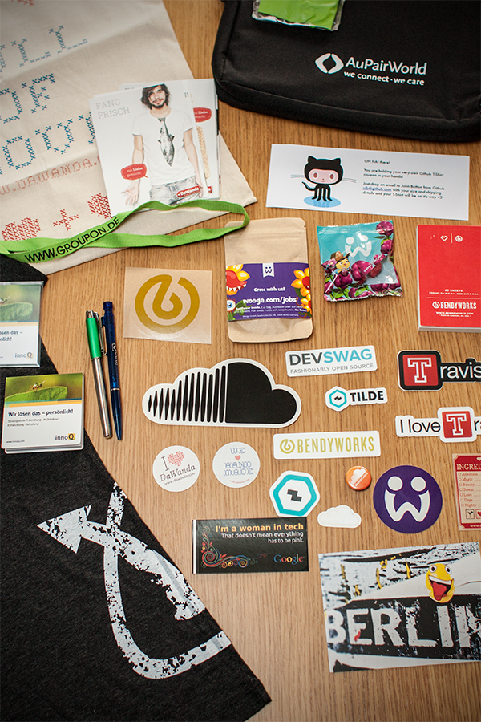
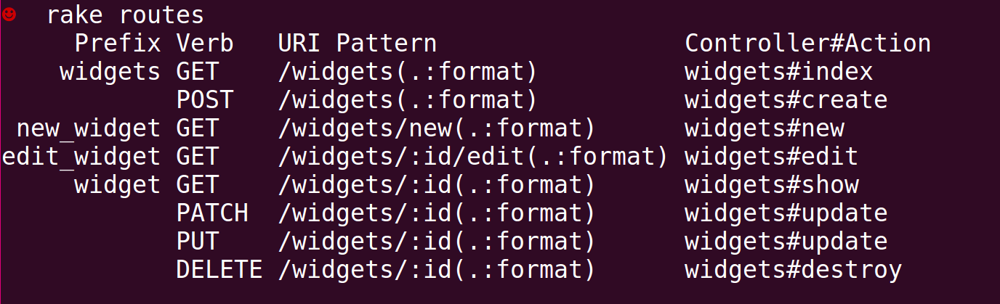
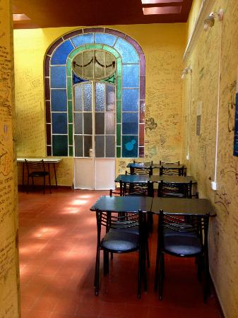

Use the space bar or arrow keys to browse the slide.
Some of the images are pretty big, so if you see an empty slide then wait a bit.
Hypermedia In Practice
/RubyConf\.(LT|BY)/
21/22 March 2015

http://railsgirlssummerofcode.org/
Hypermedia In Practice
/RubyConf\.(LT|BY)/
21/22 March 2015

@plexus
Ruby Lambik Ruby Karaoke Rails Girls Ruby Monsters ClojureBridge Chestnut Yaks Slippery Emacs Berlin Euruject
A Story
A Story
September 2013: Rails app is 6 years old
Co-tenancy styling nightmare
New sustainable approach
New Front End
Ember app
Responsive Design
Hypermedia API
Hypermedia*
*also known as REST
Hypertext
Text and links
— Some guy on stage
Hypermedia
Hypertext, but also with images, video, etc.
— Some guy on stage
REST
“Architectural Styles and the Design of Network-based Software Architectures”
— Roy Fielding (2000)
REST
After the fact description of how the web works
Uniform interface, URIs, links
Allowed for anarchy at massive scale
Some Vocab
Resource
Anything abstract or concrete you can refer to
URI
Identifier for a resource (URL: pointer to ~)
Representation (also: Entity)
Serialization of a resource. Specific to Format and Time
REST components perform actions on a resource by using a representation of the current or intended state of that resource and transferring those representations.
— Roy Fielding
Distributed hypermedia provides a uniform means of accessing services through the embedding of action controls within the presentation of information.
— Fielding
embedding of action controls within the presentation of information
— Fielding
Embedded Controls
<ul>
<li>in-</li>
<li>for-</li>
<li>ma-</li>
<li>tion</li>
</ul>
<a href="...">action</a>
<form action="..." method="...">controls</form>
Why bother?
Does a browser know the “conventions” your site uses?
Do you need a browser update when a site change?
No! Why not?
Uniform interface: Embedded action controls! (links + forms)

Resources + Representations? Yes
Embedded Action Controls? No
Not hyper{text,media} driven is NOT REST
Rails-style “RESTful”
Based on pre-shared conventions
Great for exposing DB structure over HTTP
Let’s call “Rails-REST” Resourceful, and “real REST” Hypermedia
Hypermedia
APIs
{
"id": 1,
"total": 107.5,
"item_count": 12,
"_links": {
"http://api.ticketsolve.com/rel/checkout": {
"href": "/api/checkout"
}
},
"_controls": {
"empty_cart": {
"name": "empty_cart",
"method": "DELETE",
"href": "/api/cart"
}
}
}
Media types
RFC 4288
Media Types
Accept: text/html
Content-type: application/vnd.collection+json
Media Types
Originated in email as MIME types
Mechanism for labeling content
IANA keeps a registry
Web Linking
RFC5988
Rels
<link rel="stylesheet"
href="/stylesheets.css"
type="text/css">
<link rel="alternate"
type="application/atom+xml"
href="/feed.xml">
<link rel="author"
href="https://plus.google.com/u/0/112268398775525141261">
<link rel="self" href="http://blog.url.com/feed.xml" />
Rels
Originated in HTML, spread to: XFN, Atom
Mechanism for labeling links
Microformats & IETF keep a registry
Rels
Can be registered keyword:
alternate, self, stylesheet, profile
Or custom by using URIs
http://api.foo.com/rel/product
Simply identifiers, but great to point to docs
profile rel
Allows clients to learn about additional semantics (constraints, conventions, extensions)
— RFC6906
Story Time
New Front End
Feature-flagged “slices”
Work from show listing to checkout
Roll out to volunteer customers
Step 1: Listing page
Step 1: Listing page
Step 0: Groundwork
Groundwork
Did a ton of research
Decided to use ActiveModel::Serializers, JSON-API, Ember
In the end only Ember stuck
Backend Stack
AMS (at the time) lacking stewardship, buggy
No intermediate representation
JSON-API unstable and lacking hypermedia controls

Yaks
Yaks
v0.0.0 written over a weekend
Already did what AMS was doing before (for us)
Made it easy to switch to HAL
Yaks
Since then: 427 commit, 32 releases, 12 contributors
Support for HAL, JSON-API, Collection+JSON, HTML, Transit.
Mutation tested, battle tested
Step 1: Listing page
Implement /api/shows
Use the Yaks DSL to represent Show object
For now shows will link to the legacy show pages
class ShowMapper < Yaks::Mapper
attributes :id, :name, :dates, :description
link rels[:events], '/api/shows/{id}/events'
link rels[:legacy], '/shows/{id}/events'
has_many :venues
has_one :event_category
end
HAL
Hypertext Application Language
application/hal+json
{
<attributes>,
"_links": { <rel => link>},
"_embedded": { <rel => resource> },
}
{
"id": 7,
"name": "The Two Gentlemen of Verona",
"_links": {
"http://api.ticketsolve.com/rel/legacy": {
"href": "/shows/7/events"
}
},
"_embedded": {
"http://api.ticketsolve.com/rel/event_category": {
"name": "Drama",
}
}
}
Yaks::Resource
Yaks::Resource.new(
attributes: {
first_name: "Arne",
last_name: "Brasseur"
},
...
)
Yaks::Resource
Yaks::Resource.new(
...,
links: [
Yaks::Resource::Link.new(
rel: 'collection', uri: '/api/users')
]
...
)
Yaks::Resource
Yaks::Resource.new(
...,
subresources: [
Yaks::Resource.new(
attributes: { },
links: [ ]
subresources: [ ]
)
],
...
)
Yaks::Resource
Yaks::Resource.new(
...,
forms: [
Yaks::Resource::Form.new(
name: 'create_talk'
method: 'POST',
action: '/api/talk',
fields: [...]
)
]
)
Step 1.5: Pagination
Just use links!
Standard rels for this, previous and next
Client has minimal knowledge, server is able to change
GET /api/shows?offset=50
{
"count": 120,
"offset": 50,
"_links": {
"profile": [{"href": "http://api.ts.com/profile/collection"}],
"previous": {"href": "/api/shows"},
"next": {"href": "/api/shows?offset=100"},
},
"_embedded": {
"http://api.ticketsolve.com/rel/shows": [
]
}
}
Step 2: Events Page
List or Calendar
Let API decide, frontend stays dumb
Collection will have different profile
Different pagination? No problem
{
"_links": {
"profile": [
{"href": "http://api.ticketsolve.com/profile/collection"},
{"href": "http://api.ticketsolve.com/profile/event_list"}
],
"previous": {"href": "/api/shows7/events"},
"next": {"href": "/api/shows7/events?offset=100"},
},
"_embedded": {
"http://api.ticketsolve.com/rel/events": [ ... ]
}
}
{
"_links": {
"profile": [
{"href": "http://api.ticketsolve.com/profile/collection"},
{"href": "http://api.ticketsolve.com/profile/event_calendar"}
],
"previous": {"href": "/api/shows7/events?year_month=2015-02"},
"next": {"href": "/api/shows7/events?year_month=2015-04"}
},
"_embedded": {
"http://api.ticketsolve.com/rel/events": [ ... ]
}
}
Step 3: Cart
Time to introduce forms!
Ticket, Product, LineItem: all can “change_quantity”
Form control present ⇒ UI control present
class TicketPriceMapper < BaseMapper
attributes :id, :name, :price
form :change_quantity do
action '/api/cart/ticket_line_items'
method 'POST'
number :quantity
hidden :ticket_price_id, value: ->{ id }
end
end
"_controls": {
"change_quantity": {
"name": "change_quantity",
"method": "POST",
"media_type": "application/x-www-form-urlencoded",
"fields": [
{ "name": "quantity", "type": "number" },
{ "name": "ticket_price_id",
"type": "hidden", "value": 47 }
],
"href": "/api/cart/ticket_line_items"
}
}
Step 4: Checkout
Checkout
Another big form
But now: Validation, pre-filling, error reporting
Just like HTML: Form fields contain everything
DEMO
yaks-html
Current Status
Finished end-to-end
In use by a handful of customers
Filling in missing features
Q?
Thank You!
Twitter: @plexus
github:plexus/yaks

Ship it!
Content-type: application/halo+json
{
"id": 5,
"expires_at": "2017-02-11T01:23:32+00:00",
"total": 50.0,
"item_count": 2,
"_links": {
"profile": [
{"href": "http://api.ticketsolve.com/profile/cart"}
],
"self": {"href": "/api/cart"},
"http://api.ticketsolve.com/rel/checkout": {
"href": "/api/checkout"
}
},
"_embedded": { ... },
"_controls": { ... }
}
Interesting bits
invalidates
ErrorMapper
FormError
change_quantity
presence/abscence of form control reflects on GUI
Ember hypermedia
** resource/link/form objects
** creates right type
class CartMapper < BaseMapper
attributes :id, :expires_at, :total, :item_count
link :self, '/api/cart'
has_many :line_items,
collection_mapper: LineItemCollectionMapper
has_one :promotion_code
form :promotion_code do
method 'POST'
action '/api/cart/promotion_code'
text :code, label: 'promotion_code.label',
value: ->{ cart.promotion_code.code }
end
end